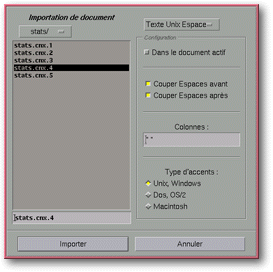

<!-- Documentation XQuad (c)1995-2000 AXENE contact axene@axene.org>
<html>

<head>
<title>Importation de document</title>
</head>

<body BGCOLOR="#FFFFFF" BACKGROUND="Images/back.gif" TEXT="#000000">

<p ALIGN="right">  </p>

<p><br>
<br>
Le sélecteur de fichier &quot;Importation de document&quot; permet de choisir le nom du
fichier qui va être importé et le type de données que ce fichier renferme. On peut
distinguer deux types de format d'import : les formats textes et les formats Excel®. <br>
<br>
</p>

<hr>

<p align="center"><br>
 <br>
<small><i>Photo d'écran&nbsp;: Sélecteur de fichier Importation de documents. </i></small></p>

<p><br>
</p>

<hr>

<p><br>
</p>

<p><a NAME="format_list">En haut, à droite dans le sélecteur, une liste déroulante
permet de choisir le type de donnée du fichier à importer. En fonction de l'élément
choisi dans la liste, la section <i>&quot;Configuration&quot;</i> de la partie droite du
sélecteur peut prendre deux formes&nbsp;:</a> 

<ol>
  <li>Importation de fichier Texte ( éléments <i>&quot;Texte [Unix/Dos/Mac]
    [Espace/Tab/CSV]&quot;</i> ). La section <i>&quot;Configuration&quot;</i> est telle que
    dans la photo d'écran. <br>
    &nbsp;</li>
  <li>Importation de fichier Excel® ( éléments <i>&quot;Excel [2/3/4]&quot;</i> ). La
    section <i>&quot;Configuration&quot;</i> est vide. L'importation d'un fichier Excel®,
    crée une nouvelle feuille de calcul. Attention, il faut choisir la bonne version de
    fichier Excel®. </li>
</ol>

<p><a NAME="configuration_section">Dans le cas d'importation de fichier Texte, la section <i>&quot;Configuration&quot;</i>
est composée de haut en bas par&nbsp;:</a> 

<ul>
  <li><a NAME="in_active_doc_button">le bouton <i>&quot;Dans le document actif&quot;</i>, qui
    permet d'<b>insérer dans la feuille de calcul active le contenu du fichier texte à
    importer</b>. L'insertion s'effectue au niveau de la cellule active et peut écraser le
    contenu des cellules situées vers la droite et vers le bas. La décoration des cellules
    écrasées ne sera pas touchée. Quand ce bouton n'est pas enfoncé, une nouvelle feuille
    de calcul est créée pour recevoir le contenu du fichier à importer. </a><br>
    &nbsp;</li>
  <li><a NAME="trim_before_button">le bouton <i>&quot;Couper Espaces avant&quot;</i>, qui
    permet de <b>supprimer les caractères espace du début du contenu de chaque cellule</b>.
    Si le fichier à importer contient des données formatées par des espaces, il est
    préférable d'enfoncer ce bouton. </a><br>
    &nbsp;</li>
  <li><a NAME="trim_after_button">le bouton <i>&quot;Couper Espaces après&quot;</i>, qui
    permet de <b>supprimer les caractères espace de fin du contenu de chaque cellule</b>. Si
    le fichier à importer contient des données formatées par des espaces, il est
    préférable d'enfoncer ce bouton. </a><br>
    &nbsp;</li>
  <li><a NAME="sep_column_textfield">le champ texte <i>&quot;Colonnes:&quot;</i>, qui permet
    d'<b>indiquer comment doit s'effectuer la séparation des cellules en colonnes</b> à
    partir du fichier à importer. Le contenu de ce champ est régie par une </a><a HREF="Box_FS_Import_grammary.html">grammaire particulière</a>. <br>
    &nbsp;</li>
  <li><a NAME="encoding_buttons">les trois boutons <i>&quot;Type d'accents&quot;</i> (<i>&quot;Unix,
    Windows&quot;</i>, <i>&quot;Dos, OS/2&quot;</i> et <i>&quot;Macintosh&quot;</i>) qui
    permettent de <b>spécifier la table d'accents à utiliser</b> pour obtenir une bonne
    conversion du système d'où provient le fichier à importer et XQuad. </a></li>
</ul>

<p><br>
</p>

<hr>

<p ALIGN="right"></p>
</body>
</html>
